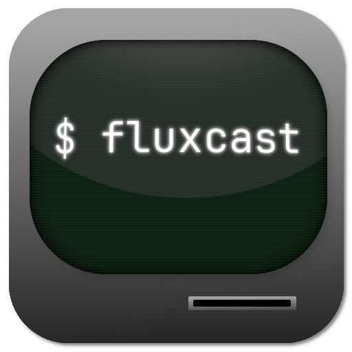

Crafted to disappear
Tiny by design, not by accident.
S
Smallest size
One command per action. Your source is a haiku, not a novel. hello.vul fits in one line.
F
Fast on C
Built on top of C — so programs stay quick and the runtime stays quiet while you code.
A
Any OS
Script your machines on Windows, macOS or Linux. The interpreter drops in and gets out of the way.
O
Open source
Own the whole fox. The language, the docs and every release live in the vulpin-lang GitHub org.
See how small gets loud
A whole first program. Every command, every string.
G "Hello World!" $ vulpin hello.vul Hello World!
Born in the open
No mystery meat. Read it, fork it, break it, fix it.
Powered with a little help
Thanks to the folks who keep the fox fed.

Hosted by FluxCast
The Vulpin homepages load lightning-fast, served by the FluxCast network.